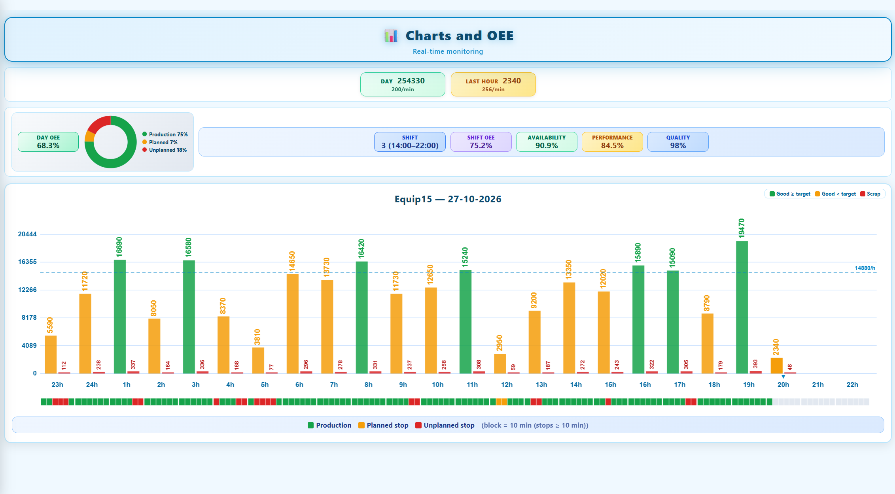
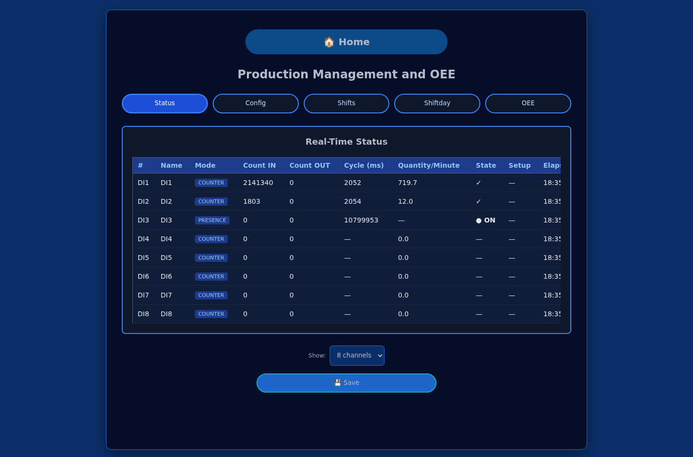
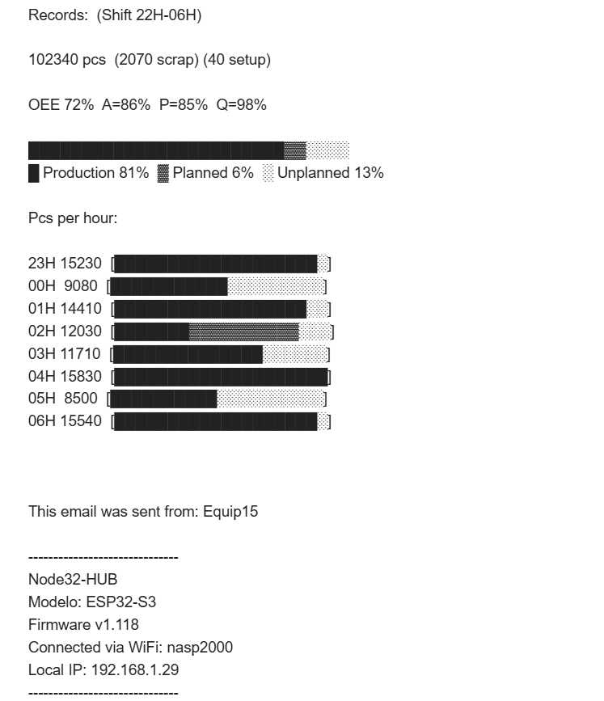

What it does
- Eight monitored inputs — inductive proximity sensors on the 8DI8DO, per-channel debounce, counts kept across reboots.
- OEE A×P×Q — availability, performance and quality computed from the shift window, not from a spreadsheet.
- Shifts — day-aligned or custom windows, with per-shift targets and a goal-vs-actual dashboard.
- Inactivity alerts — email when a machine stops producing for longer than the configured time.
- CSV history — daily files on SD, served from the page; the same data goes into the email report.
- Ethernet — wired PoE, no Wi-Fi, no mDNS; the board sits in the cabinet with the machine.




